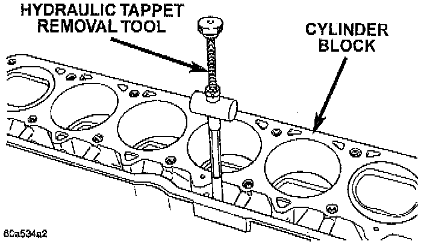

Lifter / Lash Adjuster: Service and Repair

NOTE: Retain all the components in the same order as removed.
REMOVAL
1. Remove the engine cylinder head.
2. Remove the push rods.
3. Remove the tappets through the push rod openings in the cylinder block with a Hydraulic Valve Tappet Removal/Installation Tool.
NOTE: It is not necessary to charge the tappets with engine oil. They will charge themselves within a very short period of engine operation.
INSTALLATION
1. Dip each tappet in Mopar Engine Oil Supplement, or equivalent.
2. Use Hydraulic Valve Tappet Removal/Installation Tool to install each tappet in the same bore from where it was originally removed.
3. Install the cylinder head assembly.
4. Install the push rods in their original locations.
5. Install the rocker arms and bridge and pivot assemblies at their original locations. Loosely install the capscrews at each bridge.
6. Tighten the capscrews alternately, one turn at a time, to avoid damaging the bridges. Tighten the capscrews to 28 Nm (21 ft. lbs.) torque.
7. Pour the remaining Mopar Engine Oil Supplement, or equivalent over the entire valve actuating assembly. The Mopar Engine Oil Supplement, or equivalent must remain with the engine oil for at least 1,609 km (1,000 miles). The oil supplement need not be drained until the next scheduled oil change.
8. Install the engine cylinder head cover.